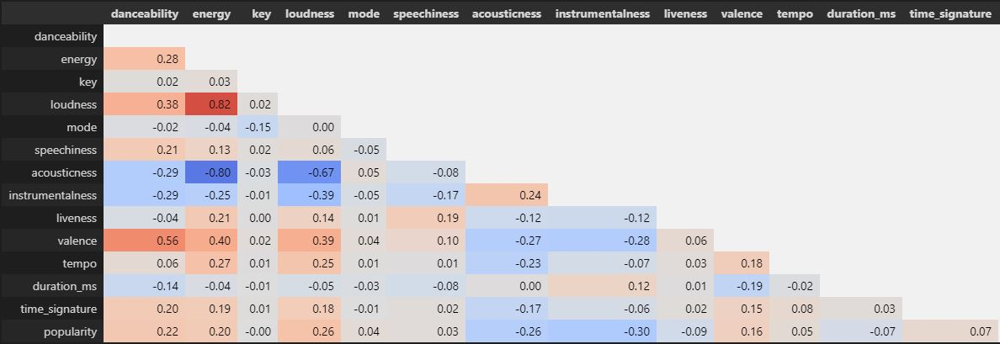

Regression analysis using select attributes
As a start to looking at building a model it is worthwhile seeing if a simple regression model can be used taking in two data points. This will help towards confirming whether there are in fact relationships which can be modelled.
Loudness:energy appears to have the strongest positive correlation while accousticness:energy appears to have the strongest negative correlation. Other values mostly have weak correlations.
To select variables a Pandas was used to create a simple correlation table showing which song attributes have positive and negative correlations along with the strength of these.